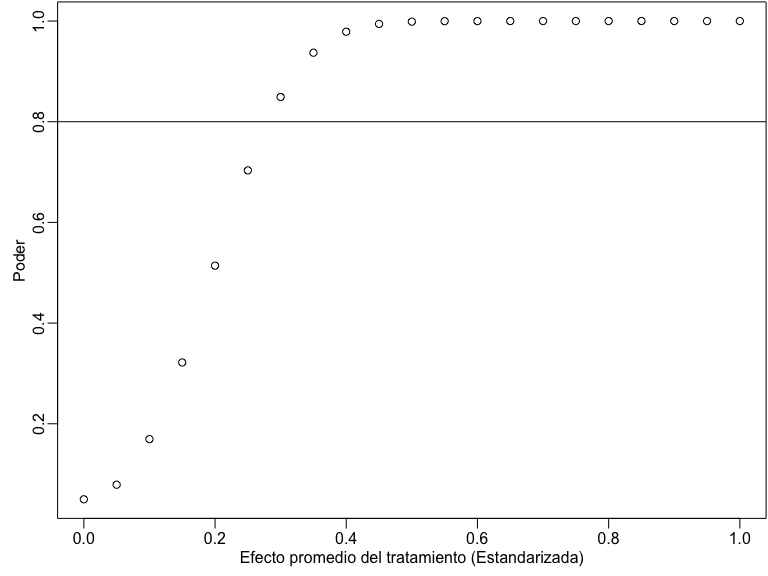

Statistical Power
Fill In Your Name
01 March, 2021
What is power?
What is power?
We want to separate signal from noise.
Power = probability of rejecting null hypothesis, given true effect \(\ne\) 0.
In other words, it is the ability to detect an effect given that it exists.
Formally: (1 - Type II) error rate.
Thus, power \(\in\) (0, 1).
Standard thresholds: 0.8 or 0.9.
Starting point for power analysis
Power analysis is something we do before we run a study.
Helps you figure out the sample you need to detect a given effect size.
Or helps you figure out a minimal detectable difference given a set sample size.
May help you decide whether to run a study.
It is hard to learn from an under-powered null finding.
- Was there an effect, but we were unable to detect it? or was there no effect? We can’t say.
Power
Say there truly is a treatment effect and you run your experiment many times. How often will you get a statistically significant result?
Some guesswork to answer this question.
How big is your treatment effect?
How many units are treated, measured?
How much noise is there in the measurement of your outcome?
Approaches to power calculation
Analytical calculations of power
Simulation
Power calculation tools
Interactive
R Packages
DeclareDesign, see also https://declaredesign.org/
Analytical calculations of power
Analytical calculations of power
Formula: \[\begin{align*} \text{Power} &= \Phi\left(\frac{|\tau| \sqrt{N}}{2\sigma}- \Phi^{-1}(1- \frac{\alpha}{2})\right) \end{align*}\]
Components:
- \(\phi\): standard normal CDF is monotonically increasing
- \(\tau\): the effect size
- \(N\): the sample size
- \(\sigma\): the standard deviation of the outcome
- \(\alpha\): the significance level (typically 0.05)
Example: Analytical calculations of power
# Power for a study with 80 obserations and effect
# size of 0.25
library(pwr)
pwr.t.test(
n = 40, d = 0.25, sig.level = 0.05,
power = NULL, type = c(
"two.sample",
"one.sample", "paired"
)
)
Two-sample t test power calculation
n = 40
d = 0.25
sig.level = 0.05
power = 0.1972
alternative = two.sided
NOTE: n is number in *each* groupLimitations to analytical power calculations
Only derived for some estimands (ATE/ITT)
Makes specific assumptions about the data-generating process
Incompatible with more complex designs
Simulation-based power calculation
Simulation-based power calculation
Create dataset and simulate research design.
Assumptions are necessary for simulation studies, but you make your own.
For the DeclareDesign approach, see https://declaredesign.org/
Steps
Define the sample and the potential outcomes function.
Define the treatment assignment procedure.
Create data.
Assign treatment, then estimate the effect.
Do this many times.
Examples
Complete randomization
With covariates
With cluster randomization
Example: Simulation-based power for complete randomization
# install.packages("randomizr")
library("randomizr")
library("estimatr")
## Y0 is fixed in most field experiments.
## So we only generate it once:
make_Y0 <- function(N) {
rnorm(n = N)
}
repeat_experiment_and_test <- function(N, Y0, tau) {
Z <- complete_ra(N = N)
Y1 <- Y0 + Z * tau
Yobs <- Z * Y1 + (1 - Z) * Y0
estimator <- lm_robust(Yobs ~ Z)
pval <- estimator$p.value[2]
return(pval)
}Example: Simulation-based power for complete randomization
power_sim <- function(N, tau, sims) {
Y0 <- make_Y0(N)
pvals <- replicate(
n = sims,
repeat_experiment_and_test(N = N, Y0 = Y0, tau = tau)
)
pow <- sum(pvals < .05) / sims
return(pow)
}
set.seed(12345)
power_sim(N = 80, tau = .25, sims = 100)[1] 0.15[1] 0.21Example: Using DeclareDesign
library(DeclareDesign)
library(tidyverse)
P0 <- declare_population(N, u0 = rnorm(N))
# declare Y(Z=1) and Y(Z=0)
O0 <- declare_potential_outcomes(Y_Z_0 = 5 + u0, Y_Z_1 = Y_Z_0 + tau)
# design is to assign m units to treatment
A0 <- declare_assignment(m = round(N / 2))
# estimand is the average difference between Y(Z=1) and Y(Z=0)
estimand_ate <- declare_estimand(ATE = mean(Y_Z_1 - Y_Z_0))
R0 <- declare_reveal(Y, Z)
design0_base <- P0 + A0 + O0 + R0
## For example:
design0_N100_tau25 <- redesign(design0_base, N = 100, tau = .25)
dat0_N100_tau25 <- draw_data(design0_N100_tau25)
head(dat0_N100_tau25) ID u0 Z Z_cond_prob Y_Z_0 Y_Z_1 Y
1 001 -0.2060 0 0.5 4.794 5.044 4.794
2 002 -0.5875 0 0.5 4.413 4.663 4.413
3 003 -0.2908 1 0.5 4.709 4.959 4.959
4 004 -2.5649 0 0.5 2.435 2.685 2.435
5 005 -1.8967 0 0.5 3.103 3.353 3.103
6 006 -1.6401 1 0.5 3.360 3.610 3.610[1] 0.25[1] 0.5569(Intercept) Z
4.8458 0.5569 E0 <- declare_estimator(Y ~ Z,
model = lm_robust, label = "t test 1",
estimand = "ATE"
)
t_test <- function(data) {
test <- with(data, t.test(x = Y[Z == 1], y = Y[Z == 0]))
data.frame(statistic = test$statistic, p.value = test$p.value)
}
T0 <- declare_test(handler = label_test(t_test), label = "t test 2")
design0_plus_tests <- design0_base + E0 + T0
design0_N100_tau25_plus <- redesign(design0_plus_tests, N = 100, tau = .25)
## Only repeat the random assignment, not the creation of Y0. Ignore warning
names(design0_N100_tau25_plus)[1] "P0" "A0" "O0" "R0" "t test 1" "t test 2"design0_N100_tau25_sims <- simulate_design(design0_N100_tau25_plus,
sims = c(1, 100, 1, 1, 1, 1)
) # only repeat the random assignmentWarning: We recommend you choose a higher number of simulations than 1 for the top level of simulation.# design0_N100_tau25_sims has 200 rows (2 tests * 100 random assignments)
# just look at the first 6 rows
head(design0_N100_tau25_sims) design_label N tau sim_ID estimator_label term estimate std.error statistic p.value conf.low conf.high df outcome
1 design0_N100_tau25_plus 100 0.25 1 t test 1 Z 0.1108 0.2150 0.5153 0.60752 -0.3158 0.5374 98 Y
2 design0_N100_tau25_plus 100 0.25 1 t test 2 <NA> NA NA 0.5153 0.60754 NA NA NA <NA>
3 design0_N100_tau25_plus 100 0.25 2 t test 1 Z 0.2458 0.2154 1.1411 0.25661 -0.1817 0.6733 98 Y
4 design0_N100_tau25_plus 100 0.25 2 t test 2 <NA> NA NA 1.1411 0.25662 NA NA NA <NA>
5 design0_N100_tau25_plus 100 0.25 3 t test 1 Z 0.5463 0.2133 2.5608 0.01197 0.1229 0.9697 98 Y
6 design0_N100_tau25_plus 100 0.25 3 t test 2 <NA> NA NA 2.5608 0.01203 NA NA NA <NA>
estimand_label step_1_draw step_2_draw
1 ATE 1 1
2 <NA> 1 1
3 ATE 1 2
4 <NA> 1 2
5 ATE 1 3
6 <NA> 1 3# for each estimator, power = proportion of simulations with p.value < 0.5
design0_N100_tau25_sims %>%
group_by(estimator_label) %>%
summarize(pow = mean(p.value < .05), .groups = "drop")# A tibble: 2 x 2
estimator_label pow
<chr> <dbl>
1 t test 1 0.2
2 t test 2 0.2Power with covariate adjustment
Covariate adjustment and power
Covariate adjustment can improve power because it mops up variation in the outcome variable.
If prognostic, covariate adjustment can reduce variance dramatically. Lower variance means higher power.
If non-prognostic, power gains are minimal.
All covariates must be pre-treatment. Do not drop observations on account of missingness.
- See the module on threats to internal validity and the 10 things to know about covariate adjustment.
Freedman’s bias as n of observations decreases and K covariates increases.
Blocking
Blocking: randomly assign treatment within blocks
“Ex-ante” covariate adjustment
Higher precision/efficiency implies more power
Reduce “conditional bias”: association between treatment assignment and potential outcomes
Benefits of blocking over covariate adjustment clearest in small experiments
Example: Simulation-based power with a covariate
## Y0 is fixed in most field experiments. So we only generate it once
make_Y0_cov <- function(N) {
u0 <- rnorm(n = N)
x <- rpois(n = N, lambda = 2)
Y0 <- .5 * sd(u0) * x + u0
return(data.frame(Y0 = Y0, x = x))
}
## X is moderarely predictive of Y0.
test_dat <- make_Y0_cov(100)
test_lm <- lm_robust(Y0 ~ x, data = test_dat)
summary(test_lm)
Call:
lm_robust(formula = Y0 ~ x, data = test_dat)
Standard error type: HC2
Coefficients:
Estimate Std. Error t value Pr(>|t|) CI Lower CI Upper DF
(Intercept) 0.11 0.1880 0.585 0.559753653 -0.263 0.483 98
x 0.44 0.0814 5.413 0.000000441 0.279 0.602 98
Multiple R-squared: 0.231 , Adjusted R-squared: 0.223
F-statistic: 29.3 on 1 and 98 DF, p-value: 0.000000441## now set up the simulation
repeat_experiment_and_test_cov <- function(N, tau, Y0, x) {
Z <- complete_ra(N = N)
Y1 <- Y0 + Z * tau
Yobs <- Z * Y1 + (1 - Z) * Y0
estimator <- lm_robust(Yobs ~ Z + x, data = data.frame(Y0, Z, x))
pval <- estimator$p.value[2]
return(pval)
}
## create the data once, randomly assign treatment sims times
## report what proportion return p-value < 0.05
power_sim_cov <- function(N, tau, sims) {
dat <- make_Y0_cov(N)
pvals <- replicate(n = sims, repeat_experiment_and_test_cov(
N = N,
tau = tau, Y0 = dat$Y0, x = dat$x
))
pow <- sum(pvals < .05) / sims
return(pow)
}[1] 0.13[1] 0.19Power for cluster randomization
Power and clustered designs
Recall the randomization module.
Given a fixed \(N\), a clustered design is weakly less powered than a non-clustered design.
- The difference is often substantial.
We have to estimate variance correctly:
- Clustering standard errors (the usual)
- Randomization inference
To increase power:
- Better to increase number of clusters than number of units per cluster.
- How much clusters reduce power depends critically on the intra-cluster correlation (the ratio of variance within clusters to total variance).
A note on clustering in observational research
Often overlooked, leading to (possibly) wildly understated uncertainty.
Frequentist inference based on ratio \(\hat{\beta}/\hat{se}\)
If we underestimate \(\hat{se}\), we are much more likely to reject \(H_0\). (Type-I error rate is too high.)
Many observational designs much less powered than we think they are.
Example: Simulation-based power for cluster randomization
## Y0 is fixed in most field experiments. So we only generate it once
make_Y0_clus <- function(n_indivs, n_clus) {
# n_indivs in number of people per cluster
# n_clus is number of clusters
clus_id <- gl(n_clus, n_indivs)
N <- n_clus * n_indivs
u0 <- fabricatr::draw_normal_icc(N = N, clusters = clus_id, ICC = .1)
Y0 <- u0
return(data.frame(Y0 = Y0, clus_id = clus_id))
}
test_dat <- make_Y0_clus(n_indivs = 10, n_clus = 100)
# confirm that this produces data with 10 in each of 100 clusters
table(test_dat$clus_id)
1 2 3 4 5 6 7 8 9 10 11 12 13 14 15 16 17 18 19 20 21 22 23 24 25 26 27 28 29 30 31 32 33
10 10 10 10 10 10 10 10 10 10 10 10 10 10 10 10 10 10 10 10 10 10 10 10 10 10 10 10 10 10 10 10 10
34 35 36 37 38 39 40 41 42 43 44 45 46 47 48 49 50 51 52 53 54 55 56 57 58 59 60 61 62 63 64 65 66
10 10 10 10 10 10 10 10 10 10 10 10 10 10 10 10 10 10 10 10 10 10 10 10 10 10 10 10 10 10 10 10 10
67 68 69 70 71 72 73 74 75 76 77 78 79 80 81 82 83 84 85 86 87 88 89 90 91 92 93 94 95 96 97 98 99
10 10 10 10 10 10 10 10 10 10 10 10 10 10 10 10 10 10 10 10 10 10 10 10 10 10 10 10 10 10 10 10 10
100
10 [1] 0.09655repeat_experiment_and_test_clus <- function(N, tau, Y0, clus_id) {
# here we randomize Z at the cluster level
Z <- cluster_ra(clusters = clus_id)
Y1 <- Y0 + Z * tau
Yobs <- Z * Y1 + (1 - Z) * Y0
estimator <- lm_robust(Yobs ~ Z,
clusters = clus_id,
data = data.frame(Y0, Z, clus_id), se_type = "CR2"
)
pval <- estimator$p.value[2]
return(pval)
}
power_sim_clus <- function(n_indivs, n_clus, tau, sims) {
dat <- make_Y0_clus(n_indivs, n_clus)
N <- n_indivs * n_clus
# randomize treatment sims times
pvals <- replicate(
n = sims,
repeat_experiment_and_test_clus(
N = N, tau = tau,
Y0 = dat$Y0, clus_id = dat$clus_id
)
)
pow <- sum(pvals < .05) / sims
return(pow)
}[1] 0.66[1] 0.68Example: Simulation-based power for cluster randomization (DeclareDesign)
P1 <- declare_population(
N = n_clus * n_indivs,
clusters = gl(n_clus, n_indivs),
u0 = draw_normal_icc(N = N, clusters = clusters, ICC = .2)
)
O1 <- declare_potential_outcomes(Y_Z_0 = 5 + u0, Y_Z_1 = Y_Z_0 + tau)
A1 <- declare_assignment(clusters = clusters)
estimand_ate <- declare_estimand(ATE = mean(Y_Z_1 - Y_Z_0))
R1 <- declare_reveal(Y, Z)
design1_base <- P1 + A1 + O1 + R1 + estimand_ate
## For example:
design1_test <- redesign(design1_base, n_clus = 10, n_indivs = 100, tau = .25)
test_d1 <- draw_data(design1_test)
# confirm all individuals in a cluster have the same treatment assignment
with(test_d1, table(Z, clusters)) clusters
Z 1 2 3 4 5 6 7 8 9 10
0 100 0 100 100 100 0 0 100 0 0
1 0 100 0 0 0 100 100 0 100 100# three estimators, differ in se_type:
E1a <- declare_estimator(Y ~ Z,
model = lm_robust, clusters = clusters,
se_type = "CR2", label = "CR2 cluster t test",
estimand = "ATE"
)
E1b <- declare_estimator(Y ~ Z,
model = lm_robust, clusters = clusters,
se_type = "CR0", label = "CR0 cluster t test",
estimand = "ATE"
)
E1c <- declare_estimator(Y ~ Z,
model = lm_robust, clusters = clusters,
se_type = "stata", label = "stata RCSE t test",
estimand = "ATE"
)
design1_plus <- design1_base + E1a + E1b + E1c
design1_plus_tosim <- redesign(design1_plus, n_clus = 10, n_indivs = 100, tau = .25)## Only repeat the random assignment, not the creation of Y0. Ignore warning
## We would want more simulations in practice.
set.seed(12355)
design1_sims <- simulate_design(design1_plus_tosim,
sims = c(1, 1000, rep(1, length(design1_plus_tosim) - 2))
)Warning: We recommend you choose a higher number of simulations than 1 for the top level of simulation.design1_sims %>%
group_by(estimator_label) %>%
summarize(
pow = mean(p.value < .05),
coverage = mean(estimand <= conf.high & estimand >= conf.low),
.groups = "drop"
)# A tibble: 3 x 3
estimator_label pow coverage
<chr> <dbl> <dbl>
1 CR0 cluster t test 0.155 0.911
2 CR2 cluster t test 0.105 0.936
3 stata RCSE t test 0.131 0.918## This may be simpler than the above:
d1 <- block_cluster_two_arm_designer(
N_blocks = 1,
N_clusters_in_block = 10,
N_i_in_cluster = 100,
sd_block = 0,
sd_cluster = .3,
ate = .25
)
d1_plus <- d1 + E1b + E1c
d1_sims <- simulate_design(d1_plus, sims = c(1, 1, 1000, 1, 1, 1, 1, 1))Warning: We recommend you choose a higher number of simulations than 1 for the top level of simulation.d1_sims %>%
group_by(estimator_label) %>%
summarize(
pow = mean(p.value < .05),
coverage = mean(estimand <= conf.high & estimand >= conf.low),
.groups = "drop"
)# A tibble: 3 x 3
estimator_label pow coverage
<chr> <dbl> <dbl>
1 CR0 cluster t test 0.209 0.914
2 estimator 0.143 0.941
3 stata RCSE t test 0.194 0.925Comparative statics
Comparative Statics
- Power is:
- Increasing in \(N\)
- Increasing in \(|\tau|\)
- Decreasing in \(\sigma\)
Power by sample size
some_ns <- seq(10, 800, by = 10)
pow_by_n <- sapply(some_ns, function(then) {
pwr.t.test(n = then, d = 0.25, sig.level = 0.05)$power
})
plot(some_ns, pow_by_n,
xlab = "Sample Size",
ylab = "Power"
)
abline(h = .8)
Power by treatment effect size
some_taus <- seq(0, 1, by = .05)
pow_by_tau <- sapply(some_taus, function(thetau) {
pwr.t.test(n = 200, d = thetau, sig.level = 0.05)$power
})
plot(some_taus, pow_by_tau,
xlab = "Average Treatment Effect (Standardized)",
ylab = "Power"
)
abline(h = .8)
EGAP Power Calculator
Try the calculator at: https://egap.shinyapps.io/power-app/
For cluster randomization designs, try adjusting:
- Number of clusters
- Number of units per clusters
- Intra-cluster correlation
- Treatment effect
Conclusion: How to improve your power
Increase the \(N\)
- If clustered, increase the number of clusters if at all possible
Strengthen the treatment
Improve precision
Covariate adjustment
Blocking
Better measurement of the outcome variable
Comments
Know your outcome variable.
What effects can you realistically expect from your treatment?
What is the plausible range of variation of the outcome variable?